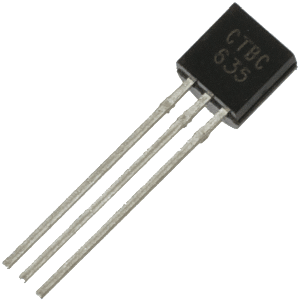
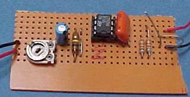
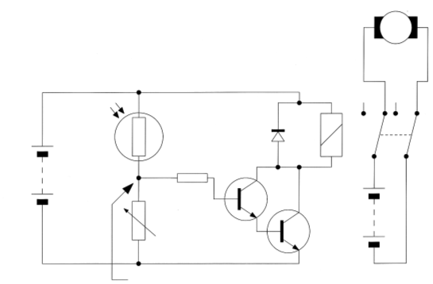

Electronic and Electrical Materials

1 Introduction
- You are required to know the classification, characteristics, groupings and applications of the following terms.
Definitions
- Conductor: A material which naturally conducts electricity. E.g. copper. These can be used to produce electronic circuits. The more effective a conductor is, the lower its resistance.
- Insulator: A material which strongly resists the flow of electrical current E.g. Glass, PVC, Polystyrene, acrylic, wood, rubber, etc.
- Semi-conductor: A material which has some degree of conductivity. These can also have unique properties, such as the ability to change the conductance. These are used to produce products such as LEDs, Transistors and integrated circuits.
- Input Transducers (discussed in the last page) convert a quantity to an electrical signal (voltage) or to resistance (which can be converted to voltage). Input transducers are also called sensors. Examples include LDRs, thermistors, microphones and variable resistors (which convert angles to different amounts of resistance). These are often analogue in nature (i.e. they are capable of varied input resistance) as opposed to digital (i.e. only existing on an off or on state, like a switch)
- Output Transducers convert an electrical signal to another quantity. For example, speakers, LED, motors and heaters all convert electricity into something else. A digital display shows a visual output in set increments (e.g. a bar display or seven segment display)
Components

- Resistors: A resistor is a component which resists the flow of current in a circuit. They are often used in circuits to reduce the amount of current or voltage flowing to a component. Resistance is measured in Ohms.
- Capacitors: Capacitors are a component which can store a small amount of electrical charge (measured in Farads). In electronics, they can be used for power smoothing, energy storage and decoupling. These can be either non-polarised (for smaller values, often measured in nF or pF), or polarised (electrolytic) which tend to be larger values (0.1μF up to several F).
- Switches: There are many different types of switch, including momentary PTM, PTB, SPST, DPDT, microswitches, tactile switches, toggle switches, etc. Essentially, they all perform the task of opening and closing a circuit to allow or restrict the flow of current.
- Relays: A relay is a mechanical component consisting of an electromagnetic coil which when powered operates a switch (which could be SPDT, DPDT, etc.). While slow compared to a transistor, the switched wires in a relay aren’t touching the coil, meaning that one circuit can interact with another in complete isolation. This is especially handy for allowing a small circuit to operate mains A/C devices safely. Relays are an examiner favourite, so ensure you're familiar with the different ways these can be used in circuits!
- Diodes: A rectifier diode is a component which allows the flow of current in one direction only (while usually consuming approximately 0.7V of the energy in the circuit). This is useful in circuit design at the start of a circuit, to prevent damage if a user accidentally connects a battery backwards. They are also used in parallel, facing backwards as “fly back” diodes where electromechanical components are used, to prevent the back EMF from motors and such like from destroying sensitive components.
- Transistors: There are three main varieties (NPN, PNP and FET), which will be discussed in more detail in a separate sheet. The simplest way to understand these is to think of them as being usable as either digital switches or current amplifiers. They consist of three legs - a base, collector and an emitter. When a small voltage (typically >0.7V) is applied to the base, current is allowed to flow from the collector to the emitter.
- Field effect transistors (FETs): From an engineer’s perspective, a FET is a voltage controlled switch. By applying increasing amounts of voltage to the gate (equivalent to the base on a transistor), one can allow increasing amounts of current to flow. FETs can also often handle more current than a transistor.
- Digital integrated circuits (ICs): By miniaturizing and connecting together a great many components (often millions), one can create a small chip which can perform any desired function (e.g. 555 timer, PIC, Op-Amp, etc).
- Analogue integrated circuits: Analogue ICs deal with signals which vary from zero to full power supply voltage. The most common IC you will encounter in S&C is the Operational Amplifier.
- Microcontrollers: Effectively a computer on a chip, a PIC Microcontroller allows the engineer to write programs to control inputs and outputs based on their requirements. More advanced microcontrollers have built-in facilities to control stepper motors, servos, LCD displays, etc.
2 Modelling Circuits
- When engineers design a new circuit, there are a number of ways they can go about modelling a design.
Methods
- Two main methods to model a circuit are by using a software simulation (we use Circuit Wizard) to test either a circuit diagram or a PCB design, or by using a breadboard to connect the physical components together.
- Software simulation advantages: All components instantly available, very fast to swap components and re-design, PCBs can be automatically generated, shows current-flow clearly, improved bug-fixing, can have built-in tools (e.g. oscilloscope).
- Software simulation disadvantages: Simulation isn’t necessarily perfect, automatic PCB designs aren’t always optimal, software can be expensive.
- Breadboard advantages: Show definitively that a circuit will work when made as a PCB, requires no soldering, circuit can be re-designed relatively easily, provides easy access for a multi-meter via holes, can be extended by clipping on additional boards.
- Breadboard disadvantages: Can be messy and become difficult to follow if wires aren’t trained around the board neatly, time consuming to produce compared to software, wires can jump out of holes, making it difficult to troubleshoot.
Circuit Manufacture

- Stripboard. This is a piece of board (example shown on the left) which consists of numerous strips of copper with component-sized holes drilled in each strip. By removing the copper from individual holes with a stripboard cutter, a circuit can be formed which can be soldered together to produce a permanent circuit. The advantage of this is the speed with which a small circuit can be assembled, and low cost. The disadvantage is that it can be complex to produce larger circuits, and the large number of holes makes it easy to make mistakes.
- Chemical Etching. This process involves exposing a piece of photo etch copper board to a high-intensity UV light for 3 minutes, then washing away the weakened etch-resist layer in the developer tank. After washing the board, it is then placed in a heated, bubbling etchant tank (containing ferric chloride solution) for about 5-10 minutes until the unwanted copper is stripped form the board. Finally, the remaining photoresist on the board is removed with a stripper solution, and the board can be dried and drilled ready for soldering.
- The advantage of a chemical etched PCB is that the artwork can be designed on a computer to give an optimal layout, that double-sided boards can be used where required to allow further size reductions, any configuration of circuit can be created and the quality of the finished board will be more durable than its stripboard counterpart.
- The disadvantage is that the use of chemicals can represent a hazard to the environment if not properly disposed of, the process is costly, skill is required to produce the boards consistently well, and the production process can be time consuming and messy.
3 Practice questions
Past Paper questions
- 2009, Q3. A switch is classified as DPDT. Explain, with the aid of a diagram, how this switch works. (4 marks)
- 2009, Q7(a). Describe in detail one method of producing a Printed Circuit Board (PCB). (8 marks)
- 2009, Q7(c). Electronic circuits can be prototyped using breadboard or by modelling on a computer simulation package. Compare these two methods of prototyping electronic circuits. (8 marks)
- June 2010, Q2. Explain the following terms.
- 2(a) An analogue input (2 marks)
- 2(b) A digital display (2 marks)
- 2010, Q4. In the circuit shown below the LDR is in shade and the voltage at Junction 1 (indicated with an arrow) is 0.5 volts.

- (a) Explain five stages of the operation of the circuit when the light level on the LDR increases. (5 marks)
- (b) What is the function of the following two components in the circuit?
- (i) The resistor (1 mark)
- (ii) The Variable Resistor (2 marks)
- 2011, Q1. Explain the following terms and give an example for each.
- 1(a) An Input transducer (2 marks)
- 1(b) An Output transducer (2 marks)
- 2011, Q4(b) With the aid of a diagram show how a SPDT switch can be used to provide both a positive and negative signal to the input of a logic gate. (2 marks)
- 2011, Q4(c). Why is it necessary to ground any unused inputs to a logic gate? (1 mark)
- 2012, Q2. With the aid of a diagram show how three 1KΩ resistors can be connected to form a network with a total resistance of 1K5Ω. (2 marks)
- 2012, Q4(b). With the aid of a diagram, show how a DPDT switch can be used to reverse the direction of rotation of a motor. (4 marks)